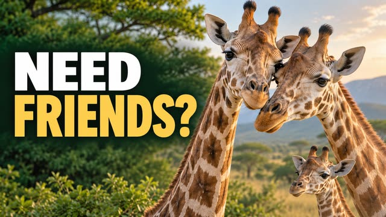
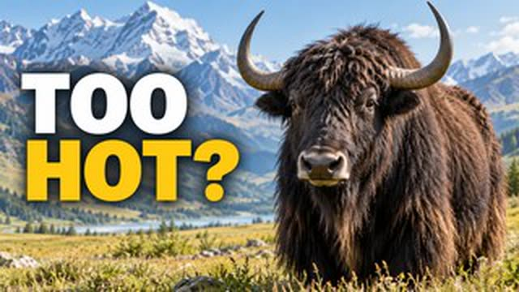
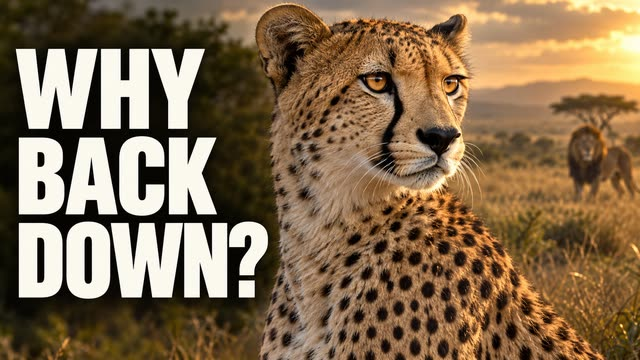
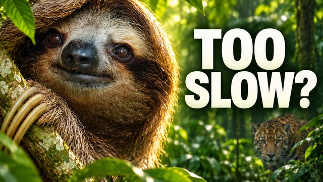
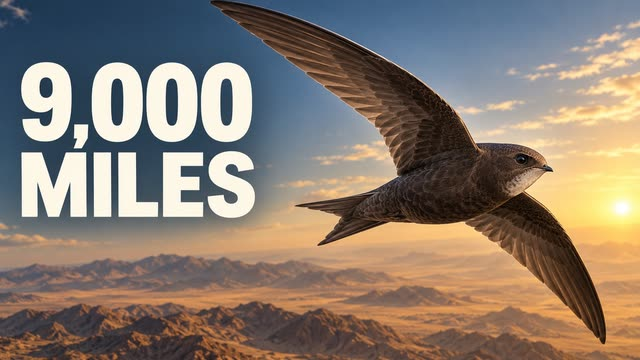
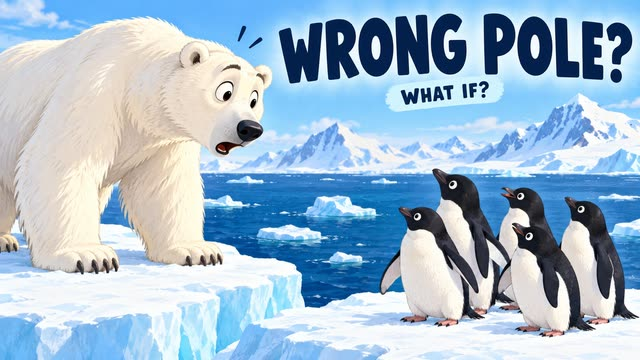
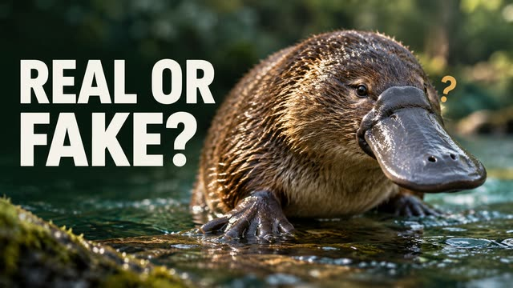
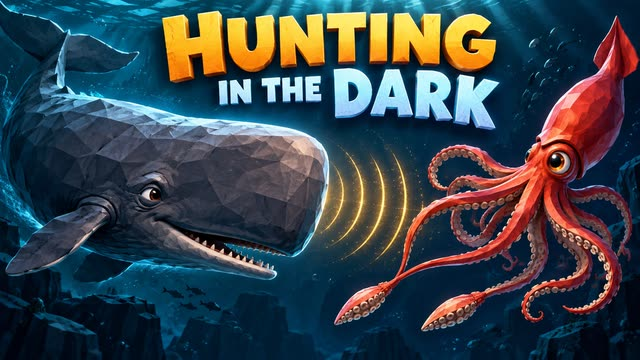
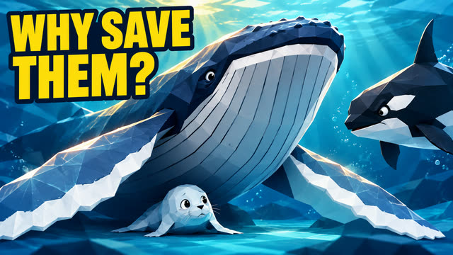
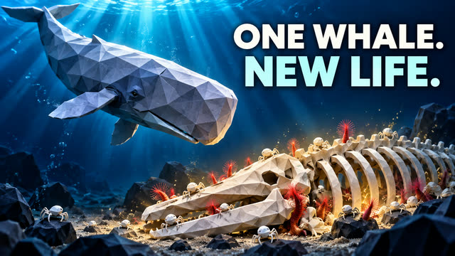

Episodes
Short animated explainers about animals, oceans, forests and the connections between them. Every episode is free to watch.

Why Giraffes Need Friends

Can a Yak Live Outside the Mountains?

Why Does the Fastest Cat Avoid a Fight?

How Do Sloths Survive Being So Slow?

How a Tiny Bird Flies 9,000 Miles to Africa

What If Polar Bears Lived in Antarctica?

Why Scientists Thought the Platypus Was Fake

How Sperm Whales Hunt Giant Squid in Total Darkness

Why Do Humpback Whales Stop Orca Hunts?

What Happens After a Whale Dies? Whale Fall Explained
Where to watch
Full episodes are on YouTube. Short vertical stories from each episode are shared on TikTok, Instagram and Facebook.
Wild Wonder Atlas Publisher
Our desktop app for sharing finished Wild Wonder Atlas stories to TikTok. It connects a TikTok account with TikTok Login Kit and sends a selected video to that account's TikTok inbox with the Content Posting API. The video stays a draft until the account owner edits and posts it in the TikTok app.
How the Publisher works- Connect TikTokSign in on TikTok's own page and approve two permissions.
- Confirm the accountThe app shows the connected display name before anything is sent.
- Preview and uploadWatch the video, then send it to the TikTok inbox.
- Finish in TikTokOpen the inbox notice, edit, add a caption and post.
About Wild Wonder Atlas
Wild Wonder Atlas is an English-language animated series about wildlife and the natural world for curious kids and families in North America. Episodes explore animal behavior, survival and the ecosystems that connect them, from ocean giants to migrating birds.
Every episode is narrated in English and checked for accuracy and kid-friendly language before release. Imaginary "what if" scenarios are labeled as imaginary.
Contact
Questions, feedback or privacy requests:
hpf118@outlook.com
Read our Privacy Policy and Terms of Service.